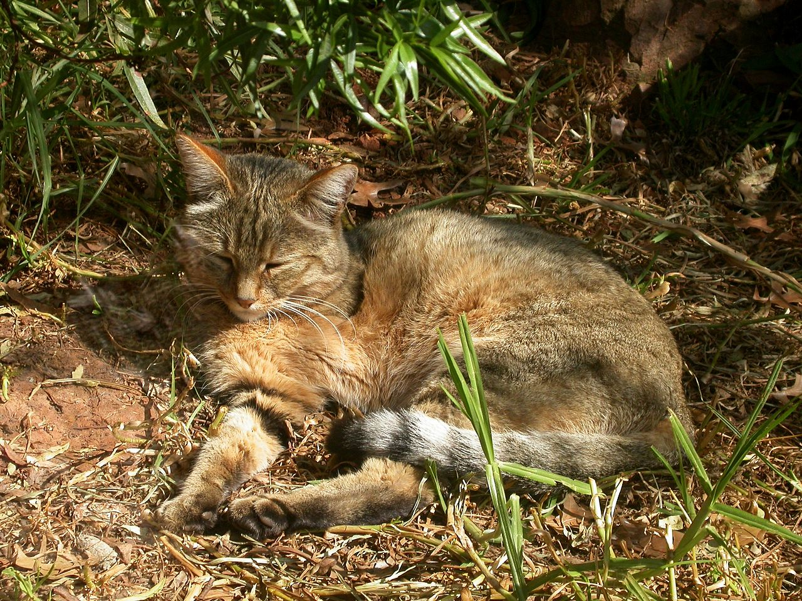

Tulajdonságok
A macska, más néven házi macska (Felis silvestris catus) kisebb termetű húsevő emlős, ami a ragadozók rendjén belül a macskafélék (Felidae) családjának Felis neméhez és vadmacska (Felis silvestris) fajához tartozik. A vadmacska alfaja. Ügyes ragadozó, több mint 1000 faj tekinthető a zsákmányának. Emellett meglehetősen intelligens, beidomítható egyszerű parancsok végrehajtására vagy szerkezetek működtetésére – illetve képes önállóan is kisebb feladatok betanulására.
Körülbelül 10 000 évvel ezelőtt kezdett az ember társaságában élni, háziasításának első ábrázolása mintegy 4000 éve Egyiptomban történt.
